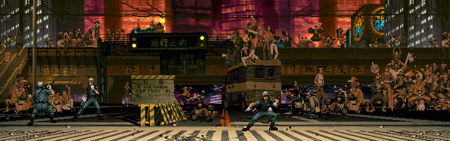

Dövüş oyunları
En sevdiklerim!

Yazar : Mastersacid
Şu zamana kadar pek çok oyun oynadım. Ama hiçbiri beni dövüş oyunları kadar kendine bağlayamamıştır. Bu türü bu kadar sevmemin arkasındaki nedeni hala tam olarak çözemedim. Kombolardan tut karakterlerin zoruluğuna, stiline kadar her şeyin oyundan oyuna göre değişmesi dövüş oyunlarını sevmemin bir sebebi olabilir. Evet yanlış okumadınız, piyasadaki her dövüş oyununun birbirinden farklılığı sadece 2 boyutlu veya 3 boyutlu olmasından ibaret değil. Kimi oyunlarda "6 button layout" (mesela Street Fighter) kullanılırken kimilerinde "4 button" layout (Tekken, Mortal Kombat, Kof, DOA ...) kullanılması en çok bilinen farklardan birisidir
Üst tarafta görmüş olduğunuz bu poster 2006 yılında çıkmış olan KOF (King Of Fighters) Maximum Impact adlı oyuna ait. Bu oyunu özellikle koydum çünkü kendisi oynadığım ilk dövüş oyunudur (Halen daha oynamaya devam ediyorum). Fakat favori oyunum olmasına rağmen bu oyun diğer dövüş severler tarafından pek beğenilmedi. Karakterler fazla güçlüymüş, 3 boyutlu savaş mekaniklerini tam oturtamamışlar falan filan. Gerçi evet karakterler güçlü ama karakterlerin güçlü olması oyunu daha eğlenceli hale getiriyor. Neyse durum böyle olunca KOF'un sahibi olan SNK, yapmış olduğu ikinci üç boyutlu savaş oyunu denemesinin "başarısız" olması sebebiyle bir daha 3 boyutlu bir KOF oyunu çıkarmadı. Peki nedir bu "3 boyutlu" ve "2 (2.5) boyutlu" savaş arasındaki fark ve oynanışı ne kadar etkiliyor?

Savaş Oyunlarında Boyut Farkı